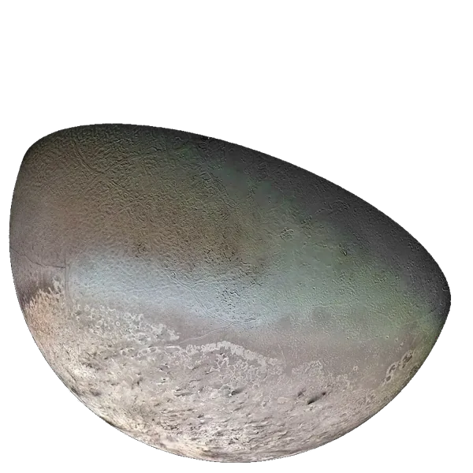

← Planetsग्रहPlanetasPlanetasPlanètesالكواكب

Tritonट्राइटनTritónTritãoTritonتريتون
Moon of Neptuneवरुण का चंद्रमाLuna de NeptunoLua de NetunoLune de Neptuneقمر نبتون
When and how it formedकब और कैसे बना
Triton did not form around Neptune. It goes around Neptune backwards, which a moon born there would not do, so it was probably a dwarf planet like Pluto that Neptune captured. The capture heated and reshaped it.Triton नेपच्यून के चारों ओर नहीं बना। यह नेपच्यून के चारों ओर उल्टी दिशा में घूमता है, जो वहाँ जन्मा चाँद नहीं करता, इसलिए यह शायद प्लूटो जैसा बौना ग्रह था जिसे नेपच्यून ने पकड़ लिया। पकड़े जाने से यह गर्म हुआ और इसका रूप बदला।
It forms in the Kuiper Belt, perhaps as one of a pair of bodies.यह Kuiper Belt में बनता है, शायद दो पिंडों की जोड़ी में से एक।
Neptune captures it into a backwards orbit; tides heat it.नेपच्यून इसे उल्टी कक्षा में पकड़ लेता है; ज्वार इसे गर्म करते हैं।
Voyager 2 (1989) saw nitrogen geysers and a young surface.Voyager 2 (1989) ने nitrogen के फव्वारे और नई सतह देखी।
Its orbit slowly shrinks; Neptune's gravity may tear it into a ring.इसकी कक्षा धीरे-धीरे छोटी होगी; नेपच्यून की gravity शायद इसे तोड़कर छल्ला बना दे।
All dates are estimates from meteorites, moon rocks, space missions and computer models.सभी तारीख़ें अनुमान हैं, जो उल्कापिंडों, चाँद की चट्टानों, अंतरिक्ष missions और computer models से आती हैं।
Inside this world · Tap a layerआंतरिक संरचना · किसी परत पर टैप करेंDentro de este mundo · Toca una capaDentro deste mundo · Toque em uma camadaÀ l'intérieur de ce monde · Touchez une coucheداخل هذا العالم · المس طبقة
Telescope eyepiece simulatorदूरबीन ज़ूम सिम्युलेटर (1x · 10x · 100x)Simulador de ocular de telescopioSimulador de ocular de telescópioSimulateur d'oculaire de télescopeمحاكي عدسة التلسكوب
AtmosphereवायुमंडलAtmósferaAtmosferaAtmosphèreالغلاف الجوي
Oxygen vs Earthऑक्सीजन: पृथ्वी से तुलनाOxígeno frente a la TierraOxigênio comparado à TerraOxygène comparé à la Terreالأكسجين مقارنة بالأرض: 0% / 20.95%0% / 20.95% · Not breathable, a spacesuit is neededसाँस लेने लायक नहीं, स्पेससूट ज़रूरी हैNo respirable, hace falta un traje espacialNão respirável, é preciso traje espacialNon respirable, une combinaison spatiale est nécessaireغير صالح للتنفس، يلزم بدلة فضاء
Could humans live here?क्या इंसान यहाँ रह सकते हैं?¿Podrían vivir humanos aquí?Humanos poderiam viver aqui?Des humains pourraient-ils y vivre ?هل يمكن للبشر العيش هنا؟
Scored from temperature, air pressure, oxygen, water, surface and gravity. Earth scores 10.तापमान, हवा के दबाव, ऑक्सीजन, पानी, सतह और गुरुत्वाकर्षण से गिना गया। पृथ्वी का स्कोर 10 है।Puntuado según temperatura, presión del aire, oxígeno, agua, superficie y gravedad. La Tierra obtiene 10.Pontuado a partir de temperatura, pressão do ar, oxigênio, água, superfície e gravidade. A Terra tira 10.Noté d'après la température, la pression de l'air, l'oxygène, l'eau, la surface et la gravité. La Terre obtient 10.تُحسب النتيجة من الحرارة وضغط الهواء والأكسجين والماء والسطح والجاذبية. تحصل الأرض على 10.
60 kg on Earth feels likeपृथ्वी के 60 किलो यहाँ इतने लगेंगे60 kg en la Tierra se sienten como60 kg na Terra parecem60 kg sur Terre donnent l'impression de60 كغ على الأرض تبدو
0.08× Earth's gravityपृथ्वी के गुरुत्व का 0.08×0,08× la gravedad de la Tierra0,08× a gravidade da Terra0,08× la gravité de la Terre0.08× جاذبية الأرض · Your weight on other planetsदूसरे ग्रहों पर आपका वज़नTu peso en otros planetasSeu peso em outros planetasVotre poids sur d'autres planètesوزنك على كواكب أخرى
Did you know?क्या आप जानते हैं?¿Sabías que…?Você sabia?Le saviez-vous ?هل تعلم؟
Triton goes around Neptune backwards, so it was probably a dwarf planet that Neptune captured.ट्राइटन वरुण का चक्कर उल्टी दिशा में लगाता है, इसलिए शायद वह एक बौना ग्रह था जिसे वरुण ने पकड़ लिया।Tritón gira alrededor de Neptuno al revés, así que probablemente era un planeta enano que Neptuno capturó.Tritão gira em torno de Netuno ao contrário, então provavelmente era um planeta anão capturado por Netuno.Triton tourne autour de Neptune à l'envers, c'était donc probablement une planète naine capturée par Neptune.يدور تريتون حول نبتون في الاتجاه المعاكس، لذا ربما كان كوكبًا قزمًا أسره نبتون.
At about −235 °C, Triton is one of the coldest places anyone has measured in the solar system.करीब −235 °C पर ट्राइटन सौरमंडल की उन सबसे ठंडी जगहों में है जहाँ कभी तापमान नापा गया है।A unos −235 °C, Tritón es uno de los lugares más fríos que se han medido en el sistema solar.A cerca de −235 °C, Tritão é um dos lugares mais frios já medidos no Sistema Solar.À environ −235 °C, Triton est l'un des endroits les plus froids jamais mesurés dans le système solaire.عند نحو −235 °C يُعد تريتون من أبرد الأماكن التي قيست في المجموعة الشمسية.